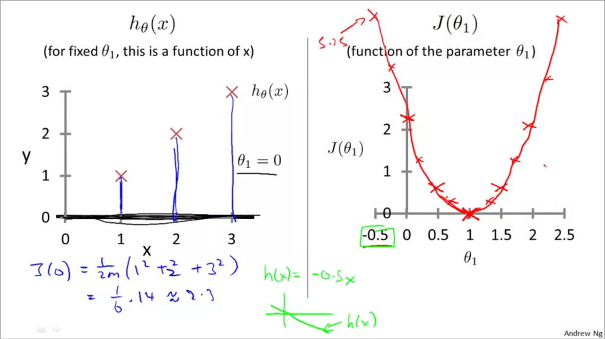
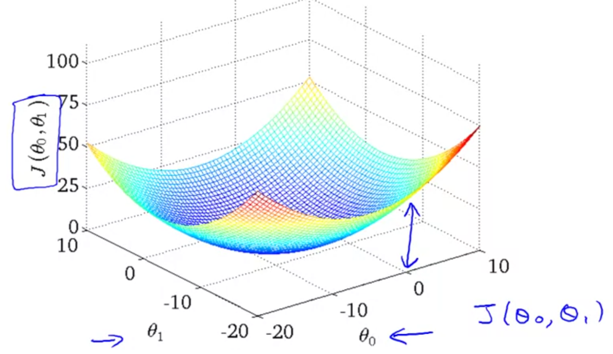
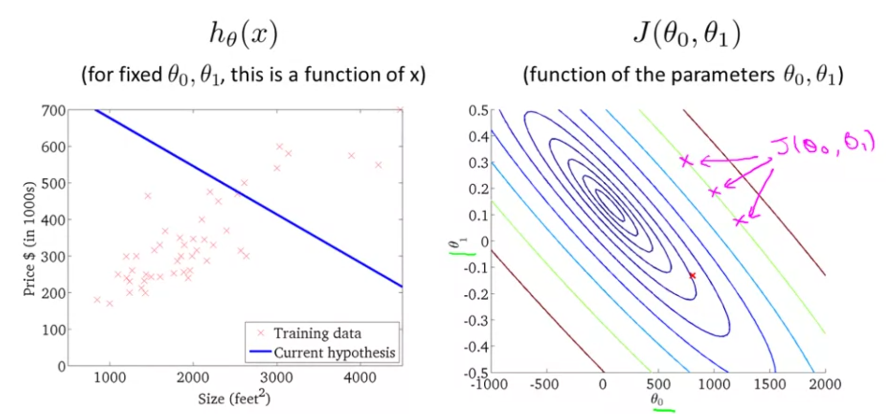
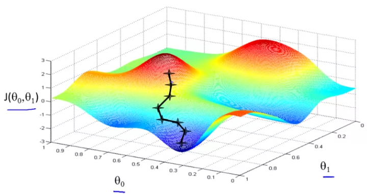
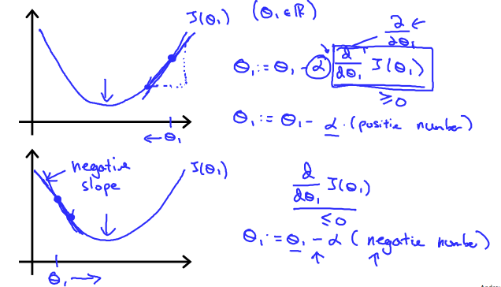
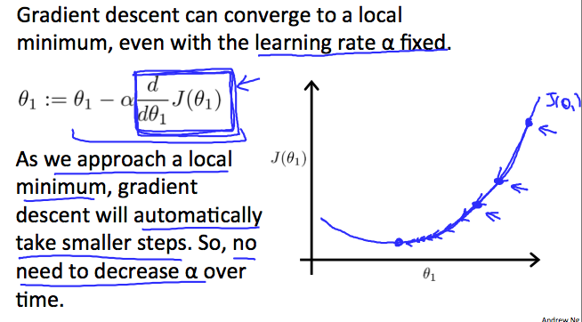

Understanding Gradient Descent
Linear regression¶
Cost functions¶
The linear regression estimation function (hypothesis function) can be written as $h_{\theta} (x) = \theta_{0} + \theta_{1}x$. The cost function for this equation can be written as
$$ J(\theta_{0}, \theta_{1}) = \frac{1}{2m} \sum_{i=1}^{m} (h_{\theta}(x_{i}) - y_{i})^2 $$
The core of the cost function is the squared difference between prediction and truth in $y$. In other words, this can be written as
$$ J(\theta_{0}, \theta_{1}) = \frac{1}{2m} \sum_{i=1}^{m} (\hat y_{i} - y_{i})^2 $$
We square the error as that is a common way of measuring loss. We sum the loss for each value of $y$, get the average and then half the average. The squared error cost function is pretty common and works well for linear regressions. We halve the error function for convenience later when we take the derivative of the function and the 2 gets cancelled out. However, the objective of the estimation function is choosing values of $\theta_{0} and \theta_{1}$ such that they minimize the cost function.
Minimizing cost functions¶
To understand how to minimize the cost functions, let us simplify the above regression to a state where intercept is 0. Thus the estimation / hypothesis function changes to
$$ J(\theta_{1}) = \frac{1}{2m} \sum_{i=1}^{m}(h_{\theta}(x_{i}) - y_{i})^2 $$ which reduces to $$ J(\theta_{1}) = \frac{1}{2m} \sum_{i=1}^{m}(\theta_{1}x_{i} - y_{i})^2 $$
Next, we solve for the cost function for different values of $\theta_{1}$ and plot them in a graph as shown below:

The cost function takes shape of a parabola, with a clear minima.
Minimizing multidimensional cost functions¶
In the previous example, we assumed $\theta_{0}=0$. If that was not the case, then we need to minimize the residuals / cost function while changing values of both the variables. This leads to a 3D plot as shown below: 
Another way to represent the cost function is via contour plots as shown below:

Points along same contour have same values of error/loss for different values of $\theta_{0}$ and $\theta_{1}$. The objective is to find the lowest point in the contours - which has the lowest error/loss and find its parameters.
In a multiple regression problem, there are several predictor variables. Thus the loss function is hard to visualize as there now multiple dimensions, one for coefficient of predictor variable + intercept term. An algorithmic way of minimizing the cost function is called gradient descent.
Gradient descent¶
Gradient descent is an algorithm that is used to minimize the loss function. It is also used widely in many machine learning problems. The idea is, to start with arbitrary values for $\theta_{0}$ and $\theta_{1}$, keep changing them little by little until we reach minimal values for the loss function $J(\theta_{0}, \theta_{1})$.
The following graphic shows the distribution of the loss function. The GD algorithm starts at an arbitrary point for $\theta_{0}$ and $\theta_{1}$, takes small steps, at each step determining the direction of travel and stride length, and arrives as the local minima. The direction is determined by getting the slope of the tangent (derivative) at each point.

An interesting feature of GD is, if you started at a different point, you might end up at a different local minima. The definition of gradient descent for any arbitrary equation is:
$$ \theta_{j} := \theta_{j} - \alpha\frac{\partial}{\partial\theta_{j}}J(\theta_{0}, \theta_{1}) \ (for \; j=0 \;and\; j=1) $$ We repeat the above equation until convergence. The $:=$ is assignment operator, $\partial$ is partial differential operator, $\alpha$ is the learning rate. $\alpha$ controls the stride length in the descent graphic.
Thus, when you have two coefficients, you would compute $$ temp0 := \theta_{0} - \alpha\frac{\partial}{\partial\theta_{0}}J(\theta_{0}, \theta_{1}) $$ $$ temp1 := \theta_{1} - \alpha\frac{\partial}{\partial\theta_{1}}J(\theta_{0}, \theta_{1}) $$ $$ \theta_{0} := temp0 $$ $$ \theta_{1}:= temp1 $$ Note: It is important to compute $\theta_{0}, \theta_{1}$ simultaneously (in parallel). You should not compute 1 and substitute its value when computing the next parameter. Intuitively, you are changing both $\theta_{0}, \theta_{1}$ instead of changing just $\theta_{0}$, then the other. This is the principle behind partial differential equations -> you are differentiating multiple parameters at the same time, as opposed to ordinary differential equations where you differentiate just one variable.
Gradient descent intuition¶
For simplicity, let us simplify our solver to minimize over just one coefficient $J(\theta_{1})$. Now strictly speaking, this is a ordinary differential equation, not partial. The equation now becomes
$$ repeat \; until \; convergence \ \theta_{1} := \theta_{1} - \alpha \frac{d}{d\theta_{1}} J(\theta_{1}) $$
The shape of $J(\theta_{1})$ looks like below:

The $\frac{d}{d\theta_{1}} J(\theta_{1})$ term is the derivative and gives the slope of the tangent at each point. The direction of the slope changes depending on the position on the curve and will lead the iteration to local minima.
The learning rate $\alpha$ is multiplied by the slope / derivative term. A larger $\alpha$ will lead to an aggressive iteration which may overshoot the minima or even lead to run away divergence. A very small or conservative $\alpha$ will slow down the convergence or might settle for minor minimums as local minima.

Further, as we approach the local minima, the slope decreases. Thus even for a fixed $\alpha$, the rate of change will slow down in general, leading to a safe landing at minima. The slope at local minima is 0. Thus, once reached, the second term of the equation (right of the minus sign) turns to 0 and the iteration as converged.
Gradient descent for linear regression¶
The loss function $J(\theta_{0}, \theta_{1})$ can be expanded out with actual loss function equation from earlier. Thus now the differential equations become:
$$ repeat \; until \; convergence $$ $$ \theta_{0} := \theta_{0} - \alpha \frac{1}{m} \sum_{i=1}^{m} (h_{\theta}(x_{i}) - y_{i}) $$ $$ \theta_{1} := \theta_{1} - \alpha \frac{1}{m} \sum_{i=1}^{m} [(h_{\theta}(x_{i}) - y_{i})x_{i}] $$
Here, m is number of training samples, $\theta_{0}$ is intercept and $\theta_{1}$ is the coefficient 1, $x_{i}$ and $y_{i}$ are values of the training data.
This process of using the full training sample for calculating the GD is called batch gradient descent. In the case of linear regression, the shape of the loss function is a convex function which looks like a bowl. There is only a global minima and no local minimas.